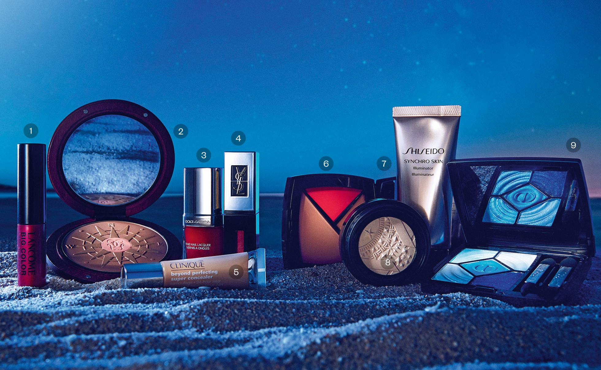

Karicha Lobato
1.Big Color Lash Top Coat, de Lancôme. Se aplica sobre la máscara de pestañas. Tiene un valor de $44. 2. Terracotta Route des Îles, de Guerlain.Edición limitada de polvos de sol con estuche de madera de caoba. Posee un valor de $32. 3. The Nail Lacquer, de Dolce & Gabbana.Laca de uñas color 606 Mandarino. $22. 4. The Holographics, de Yves Saint Laurent. Labial de la colección Vernis à Lèvres que consigue un efecto tridimensional. $36. 5. Beyond Perfecting Super Corrector Cobertura Total + 24 horas Duración, de Clinique. Se difumina al instante y es resistente al sudor.$25. 6. Palette Essentielle Été, de Chanel. Edición limitada que cuenta con dos iluminadores y un colorete. $59. 7. Synchro Skin Illuminator, de Shiseido. Iluminador de larga duración en base agua.$40. 8. Bouncy Highlighter, de Givenchy. Iluminador con textura gelificada, pero con acabado empolvado. $38.50. 9. Paleta de sombras de ojos 5 Couleurs, de Dior. Edición limitada nº 367, en gama de azules. $61.
13 de Agosto del 2018
Iluminadores y polvos dorados, sombras azules y labiales con efecto tridimensional. En las noches estivales, la clave es resplandecer.